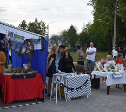
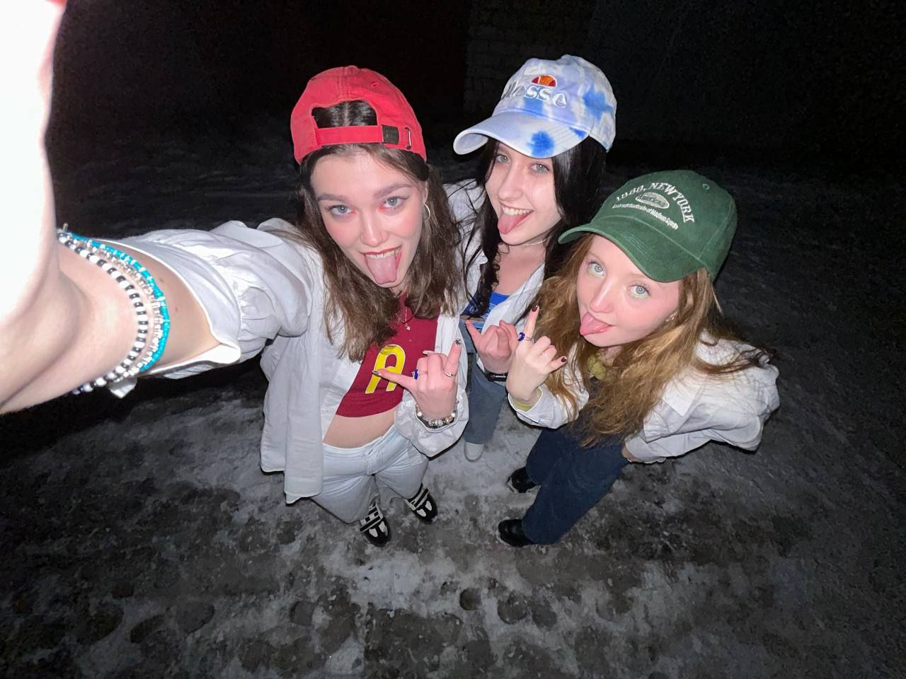
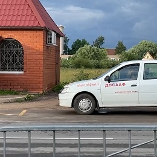
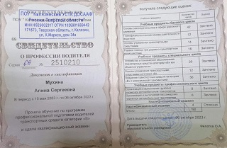

 Летом 2023 года в моём родном городе Калязин прошёл фестиваль, организованный полностью активной молодежью. Фестиваль проходил в формате уличной гаражной вечеринки с художественными мастер-классами, своп-зоной, арт-объектами, лекциями и живой музыкой. На фестивале я представляля свои работы украшений и помогала с организацией.
 На Хэллоуин в 2023 я и мои друзья выбрали костюм из известного и моего любимого фильма "Эвин и бурундуки". Мы с друзьями были наряжены как три главных героя - Элвин, Саймон и Теадор. Наши костюмы получили признания и удвили многих, мы точно выделились из толпы!
  Летом 2023 года я начала обучение в автошколе. Свой теоретический экзамен я сдала без единой ошибки с первого раза! Через пару дней меня ждёт практический экзамен, и после него я добавлю фото своего удостоверения на эту стричку!!